정보처리기사(구) (2008-03-02 기출문제)
1과목: 데이터 베이스
1. 개체-관계(E-R) 모델에 대한 설명으로 옳지 않은 것은?
- E-R 다이어그램으로 표현하며 P.Chen이 제안했다.
- 일대일(1:1) 관계 유형만을 표현할 수 있다.
- 개체 타입과 이들 간의 관계 타입을 이용해 현실 세계를 개념적으로 표현한 방법이다.
- E-R 다이어그램은 E-R 모델을 그래프 방식으로 표현한 것이다.
(정답률: 82%)

2. 로킹(Locking) 단위에 대한 설명으로 옳은 것은?
- 로킹 단위가 크면 병행성 수준이 낮아진다.
- 로킹 단위가 크면 병행 제어 기법이 복잡해진다.
- 로킹 단위가 작으면 로크(Lock)의 수가 적어진다.
- 로킹은 파일 단위로 이루어지며, 레코드 또는 필드는 로킹 단위가 될 수 없다.
(정답률: 69%)
3. 관계 데이터 모델에서 릴레이션(Relation)에 포함되어 있는 튜플(Tuple)의 수를 무엇이라고 하는가?
- Degree
- Cardinality
- Attribute
- Cartesian Product
(정답률: 74%)
4. 트랜잭션의 특성으로 옳지 않은 것은?
- 트랜잭션의 연산은 데이터베이스에 모두 반영되든지, 아니면 전혀 반영되지 않아야 한다.
- 트랜잭션이 그 실행을 성공적으로 완료하면 언제나 일관성 있는 데이터베이스 상태로 변환한다.
- 둘 이상의 트랜잭션이 동시에 병행 실행되는 경우 어느 하나의 트랜잭션 실행 중에 다른 트랜잭션의 연산이 끼어들 수 있다.
- 트랜잭션에 의해서 생성된 결과는 계속 유지되어야 한다.
(정답률: 80%)
5. 다음 SQL문의 실행결과를 가장 올바르게 설명한 것은?
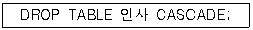
- 인사 테이블을 제거한다.
- 인사 테이블을 참조하는 테이블과 인사 테이블을 제거한다.
- 인사 테이블이 참조 중이면 제거하지 않는다.
- 인사 테이블을 제거할 지의 여부를 사용자에게 다시 질의한다.
(정답률: 81%)
6. “회사원”이라는 테이블에서 “사원명”을 검색할 때, “연락번호”가 Null 값이 아닌 “사원명”을 모두 찾을 경우의 SQL 질의로 옳은 것은?
- SELECT 사원명 FROM 회사원 WHERE 연락번호 != NULL;
- SELECT 사원명 FROM 회사원 WHERE 연락번호 <> NULL;
- SELECT 사원명 FROM 회사원 WHERE 연락번호 IS NOT NULL;
- SELECT 사원명 FROM 회사원 WHERE 연락번호 DON'T NULL;
(정답률: 77%)
7. 뷰(View)에 대한 설명으로 옳지 않은 것은?
- 뷰는 독자적인 인덱스를 가질 수 없다.
- 뷰의 정의를 변경할 수 없다.
- 뷰로 구성된 내용에 대한 삽입, 갱신, 삭제 연산에는 제약이 따른다.
- 뷰가 정의된 기본 테이블이 삭제되더라도 뷰는 자동적으로 삭제되지 않는다.
(정답률: 79%)
8. 데이터베이스 설계 단계 중 물리적 설계에서 옵션 선택시 고려사항으로 거리가 먼 것은?
- 스키마의 평가 및 정제
- 응답 시간
- 저장 공간의 효율화
- 트랜잭션 처리율
(정답률: 75%)
9. 데이터베이스 언어 중 DDL의 기능이 아닌 것은?
- 논리적, 물리적 데이터 구조의 정의
- 데이터 회복과 병행 수행 제어
- 논리적 데이터 구조와 물리적 데이터 구조의 사상 정의
- 데이터베이스 정의 및 수정
(정답률: 75%)
10. 데이터베이스 보안에 대한 설명으로 옳지 않은 것은?
- 보안을 위한 데이터 단위는 테이블 전체로부터 특정 테이블의 특정한 행과 열 위치에 있는 특정한 데이터 값에 이르기까지 다양하다.
- 각 사용자들은 일반적으로 서로 다른 객체에 대하여 다른 접근권리 또는 권한을 갖게 된다.
- 불법적인 데이터의 접근으로부터 데이터베이스를 보호하는 것이다.
- 보안을 위한 사용자들의 권한부여는 관리자의 정책결정 보다는 DBMS가 자체 결정하여 제공한다.
(정답률: 85%)
11. It is specified between two relations and is used to maintain the consistency among tuples of the two relations. What is it?
- Entity integrity constraint
- Referential integrity constraint
- Domain integrity constraint
- Data integrity constraint
(정답률: 49%)
12. Which of the following does not belong to the DDL statement of SQL?
- DELETE
- CREATE
- DROP
- ALTER
(정답률: 78%)
13. 시스템 카탈로그에 대한 설명으로 옳은 것은?
- 메타 데이터를 갖고 있는 시스템 데이터베이스이다.
- 일반 사용자도 제한 없이 시스템 카탈로그의 내용을 직접 갱신할 수 있다.
- 시스템 카탈로그는 사용자의 테이블당 한 개씩 만들어진다.
- 시스템 카탈로그는 DBA가 생성한다.
(정답률: 51%)
14. 다음 트리에 대한 프리-오더(Pre-Order) 운행 결과는?
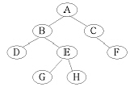
- D G H E B F C A
- D B G E H A C F
- A B D E G H C F
- A B C D E F G H
(정답률: 76%)
15. 릴레이션에 대한 설명으로 옳지 않은 것은?
- 모든 튜플은 서로 다른 값을 가지고 있다.
- 하나의 릴레이션에서 튜플은 순서를 가진다.
- 각 속성은 릴레이션 내에서 유일한 이름을 가진다.
- 모든 속성 값은 원자 값(Atomic Value)을 가진다.
(정답률: 80%)
16. 내장 SQL(Embedded SQL)에 대한 설명으로 옳지 않은 것은?
- 응용 프로그램 내에 SQL 문장을 내포하여 프로그램이 실행될 때 함께 실행되도록 호스트 프로그램 언어에 삽입된 SQL을 의미한다.
- 호스트변수와 데이터베이스 필드의 이름이 동일해서는 안된다.
- 호스트변수의 데이터 타입은 이에 대응하는 데이터베이스 필드의 SQL 데이터 타입과 일치해야 한다.
- 내장 SQL 실행문은 호스트 언어에서 실행문이 나타날 수 있는 곳이면 프로그램의 어느 곳에서나 사용할 수 있다.
(정답률: 57%)
17. 데이터베이스의 특성을 옳지 않은 것은?
- 같은 내용의 데이터를 여러 사람이 동시에 공용할 수 있다.
- 데이터베이스는 데이터의 삽입, 삭제, 갱신으로 내용이 계속적으로 변한다.
- 수시적이고 비정형적인 질의에 대하여 실시간 처리로 응답할 수 있어야 한다.
- 데이터의 참조는 저장되어 있는 데이터 레코드들의 주소나 위치에 의해서 이루어진다.
(정답률: 76%)
18. 해싱을 이용한 파일 구조에 해당하는 것은?
- 순차(Sequential) 파일
- 직접(Direct) 파일
- 색인 순차(Indexed Sequential) 파일
- 다중 키(Multi-Key) 파일
(정답률: 45%)
19. 제2정규형에서 제3정규형이 되기 위한 조건은?
- 이행적 함수 종속 제거
- 부분적 함수 종속 제거
- 다치 종속 제거
- 결정자이면서 후보 키가 아닌 것 제거
(정답률: 68%)
20. 순서가 A, B, C, D로 정해진 입력 자료를 스택에 입력하였다가 출력하는 경우, 출력 결과로서 가능하지 않은 것은?
- D, A, B, C
- B, D, C, A
- C, B, D, A
- B, A, D, C
(정답률: 69%)
2과목: 전자 계산기 구조
21. 그림과 같은 회로에서 출력 Y는?
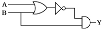
- Y = A·B + B
- Y = (A·B)' + B
- Y = (A + B)' + B
- Y = (A + B)'·B
(정답률: 60%)
22. 프로그램에 의해 제어되는 동작이 아닌 것은?
- Input/Output
- Branch
- Status Sense
- RNI(Fetch)
(정답률: 49%)
23. 결선 게이트의 특징이 아닌 것은?
- 게이트들의 출력단자를 직접 연결한다.
- 회로 비용을 절감할 수 있다.
- 많은 논리기능을 부여할 수 없다.
- Open Collector TTL로 게이트들의 출력 단자를 묶어서 사용한다.
(정답률: 52%)
24. 비트 슬라이스 마이크로프로세서(Bit sliced Microprocessor)의 구성을 가장 잘 설명한 것은?
- CPU를 하나의 IC로 만든 프로세서
- CPU, 기억장치, I/O Port가 한 IC에 구성된 프로세서
- Processor Unit, Microprogram Sequencer, Control Memory가 각각 다른 IC로 구성된 프로세서
- Processor Unit, Microprogram Sequencer, Control Memory가 한 IC로 구성된 프로세서
(정답률: 57%)
25. 중앙처리장치가 Fetch 상태인 경우에 제어점을 제어하는 것은?
- 플래그(Flag)
- 명령어(Instruction)
- 인터럽트 호출 신호
- 프로그램 카운터
(정답률: 41%)
26. 플립플롭 중 입력단자가 하나이며, “1” 이 입력될 때마다 출력단자의 상태가 바뀌는 것은?
- RS 플립플롭
- T 플립플롭
- D 플립플롭
- M/S 플립플롭
(정답률: 68%)
27. 64K인 주소 공간(Address Space)과 4K인 기억공간(Memory Space)을 가진 컴퓨터인 경우 한 페이지(Page)가 512워드로 구성된다면 페이지와 블록 수는 각각 얼마인가?
- 16페이지 12블록
- 128페이지 8블록
- 256페이지 16블록
- 64페이지 4K블록
(정답률: 55%)
28. 가상 메모리를 사용한 컴퓨터에서 Page Fault가 발생하면 어떤 현상이 일어나는가?
- 요구된 Page가 주기억장치로 옮겨질 때까지 프로그램 수행이 중단된다.
- 요구된 Page가 가상메모리 옮겨질 때까지 프로그램 수행이 중단된다.
- 현재 실행 중인 프로그램을 종료한 후 시스템이 정지된다.
- Page Fault라는 에러 메시지를 전송한 후에 시스템이 정지된다.
(정답률: 60%)
29. RISC(Reduced Instruction Set Computer)와 CISC(Complex Instruction Set Computer)의 특징이 아닌 것은?
- RISC는 명령어의 길이가 고정적이다.
- RISC는 하드웨어에 의해 직접 명령어가 수행된다.
- CISC의 수행 속도가 더 빠르다.
- 펜티엄을 포함한 인텔사의 x86 시리즈는 CISC 프로세서이다.
(정답률: 55%)
30. 인스트럭션을 수행하기 위한 메이저 상태에 대한 설명으로 옳은 것은?
- 명령어를 가져오기 위해 기억장치에 접근하는 것을 Fetch 상태라 한다.
- Execute 상태는 간접주소 지정방식의 경우 수행된다.
- CPU의 현재 상태를 보관하기 위한 기억장치 접근을 Indirect 상태라 한다.
- 명령어 종류를 판별하는 것을 Indirect 상태라 한다.
(정답률: 62%)
31. BCD 코드 1001에 대한 해밍 코드를 구하면?
- 0011001
- 1000011
- 0100101
- 0110010
(정답률: 51%)
32. 소프트웨어 인터럽트 사용 시 가장 큰 장점은?
- 우선순위 변경이 쉽다.
- 속도가 빠르다.
- 비용이 비싸다.
- 데이지 체인 방식이다.
(정답률: 70%)
33. Op-Code가 4비트이면 연산자의 종류는 몇 개가 생성될 수 있는가?
- 24-1
- 24
- 23
- 23-1
(정답률: 64%)
34. 컴퓨터의 메모리 용량이 16K×32Bit라 하면 MAR(Memory Address Register)와 MBR(Memory Buffer Register)은 각각 몇 비트인가?
- MAR : 12, MBR : 16
- MAR : 32, MBR : 14
- MAR : 12, MBR : 32
- MAR : 14, MBR : 32
(정답률: 50%)
35. 스택(Stack)이 사용되는 경우는?
- 인터럽트가 발생할 때
- 분기 명령이 실행될 때
- 무조건 점프 명령이 실행될 때
- 메모리 요구가 받아들여졌을 때
(정답률: 65%)
36. 내부 인터럽트의 원인이 아닌 것은?
- 정전
- 불법적인 명령의 실행
- Overflow 또는 0(Zero)으로 나누는 경우
- 보호 영역내의 메모리 주소를 Access하는 경우
(정답률: 78%)
37. 고속의 입·출력 장치에 사용되는 데이터 전송 방식은?
- 데이터 채널
- I/O 채널
- Selector 채널
- Multiplexer 채널
(정답률: 46%)
38. 데이터 존속 방법 중 스트로브 제어 방법의 설명으로 옳지 않은 것은?
- 전송을 시작한 송신장치가 버스에 놓인 데이터를 수신 장치가 받아 들였는지 여부를 알 수 있다.
- 비동기 방식으로 각 전송 시간을 맞추기 위해 단 하나의 제어 라인을 갖는다.
- 스트로브는 송신장치나 수신장치에 의하여 발생된다.
- 수신 장치는 스트로브 펄스를 발생시켜 송신부로 하여금 데이터를 제공하도록 알린다.
(정답률: 27%)
39. 서로 다른 17개의 정보가 있다. 이 중에서 하나를 선택하려면 최소 몇 개의 비트가 필요한가?
- 3
- 4
- 5
- 17
(정답률: 73%)
40. CPU가 인스트럭션을 수행하는 순서로 옳은 것은?
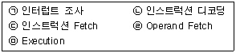
- (ㄷ)→(ㄱ)→(ㄴ)→(ㄹ)→(ㅁ)
- (ㄹ)→(ㄷ)→(ㄴ)→(ㅁ)→(ㄱ)
- (ㄴ)→(ㄷ)→(ㄹ)→(ㅁ)→(ㄱ)
- (ㄷ)→(ㄴ)→(ㄹ)→(ㅁ)→(ㄱ)
(정답률: 50%)
3과목: 운영체제
41. 페이지 오류율(Page Fault Ratio)과 스래싱(Thrashing)에 대한 설명으로 옳은 것은?
- 페이지 오류율이 크면 스래싱이 많이 발생한 것이다.
- 페이지 오류율과 스래싱은 전혀 관계가 없다.
- 스래싱이 많이 발생하면 페이지 오류율이 감소한다.
- 다중 프로그래밍의 정도가 높을수록 페이지 오류율과 스래싱이 감소한다.
(정답률: 68%)
42. UNIX에서 파일 조작을 위한 명령으로 거리가 먼 것은?
- cp
- mv
- ls
- rm
(정답률: 68%)
43. 파일 디스크립터의 내용으로 옳지 않은 것은?
- 오류 발생시 처리방법
- 보조기억장치 정보
- 파일 구조
- 접근 제어 정보
(정답률: 66%)
44. 운영체제의 작업 수행 방식에 관한 설명으로 옳지 않은 것은?
- 하나의 컴퓨터 시스템에서 여러 프로그램들이 같이 컴퓨터 시스템에 입력되어 주기억장치에 적재되고, 이들이 처리장치를 번갈아 사용하며 실행하도록 하는 것을 다중프로그래밍(Multiprogramming) 방식이라고 한다.
- 한 대의 컴퓨터를 동시에 여러 명의 사용자가 대화식으로 사용하는 방식으로 처리속도가 매우 빨라 사용자는 독립적인 시스템을 사용하는 것으로 인식하는 것을 일괄처리(Batch Processing) 방식이라고 한다.
- 한 대의 컴퓨터에 중앙처리장치(CPU)가 2개 이상 설치되어 여러 명령을 동시에 처리하는 것을 다중프로세싱(Multiprocessing) 방식이라고 한다.
- 여러 대의 컴퓨터들에 의해 작업들을 나누어 처리하여 그 내용이나 결과를 통신망을 이용하여 상호 교환되도록 연결되어 있는 것을 분산처리(Distributed Processing) 방식이라고 한다.
(정답률: 78%)
45. 교착상태의 해결 방법 중 회피(Avoidance) 기법과 밀접한 관계가 있는 것은?
- 점유 및 대기 방지
- 비선점 방지
- 환형 대기 방지
- 은행원 알고리즘 사용
(정답률: 76%)
46. 자식 프로세스의 하나가 종료될 때까지 부모 프로세스를 임시 중지시키는 유닉스 명령어는?
- exit()
- fork()
- exec()
- wait()
(정답률: 72%)
47. 디스크 스케줄링 기법 중 SCAN을 사용하여 다음 작업대기 큐의 작업을 모두 처리하고자 할 경우, 가장 최후에 처리되는 트랙은?(단, 현재 디스크 헤드는 50 트랙에서 40 트랙으로 이동해 왔다고 가정한다.)
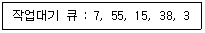
- 3
- 15
- 38
- 55
(정답률: 60%)
48. 스레드(Thread)에 관한 설명으로 옳지 않은 것은?
- 스레드는 하나의 프로세스 내에서 병행성을 증대시키기 위한 메커니즘이다.
- 스레드는 프로세스의 일부 특성을 갖고 있기 때문에 경량(Light Weight) 프로세스라고도 한다.
- 스레드는 동일 프로세스 환경에서 서로 독립적인 다중 수행이 불가능하다.
- 스레드 기반 시스템에서 스레드는 독립적인 스케줄링의 최소 단위로서 프로세스의 역할을 담당한다.
(정답률: 78%)
49. 가상기억장치(Virtual Memory)에 대한 설명으로 거리가 먼 것은?
- 보조기억장치의 일부 용량을 주기억장치처럼 가상하여 사용할 수 있도록 하는 개념이다.
- 별도의 주소 매핑 작업 없이 가상기억장치에 있는 프로그램을 주기억장치에 적재하여 실행할 수 있다.
- 가상기억장치의 구현은 일반적으로 페이징 기법과 세그먼테이션 기법을 이용한다.
- 주기억장치의 이용율과 다중 프로그래밍의 효율을 높일 수 있다.
(정답률: 67%)
50. 다음 설명에 해당하는 자원 보호 기법은?
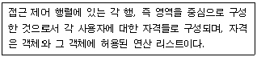
- Global Table
- Capability List
- Access Control List
- Lock/Key
(정답률: 38%)
51. 다음이 설명하는 디스크 스케줄링 기법은 무엇인가?
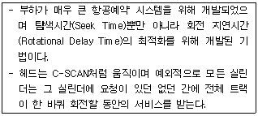
- SSTF 기법
- N-단계 SCAN 기법
- FCFS 기법
- 에션바흐(Eschenbach) 기법
(정답률: 51%)
52. 모니터에 대한 설명으로 옳지 않은 것은?
- 모니터의 경계에서 상호배제가 시행된다.
- 자료추상화와 정보은폐 기법을 기초로 한다.
- 공유 데이터와 이 데이터를 처리하는 프로시저로 구성된다.
- 모니터 외부에서도 모니터 내의 데이터를 직접 액세스할 수 있다.
(정답률: 74%)
53. RR(Round Robin) 스케줄링에 대한 설명으로 옳지 않은 것은?
- Time Slice를 크게 하면 입·출력 위주의 작업이나 긴급을 요하는 작업에 신속히 반응하지 못한다.
- Time Slice가 작을 경우 FCFS 스케줄링과 같아진다.
- Time Sharing System을 위해 고안된 방식이다.
- Time Slice가 작을수록 문맥교환 및 오버헤드가 자주 발생한다.
(정답률: 56%)
54. 디스크 공간 할당 기법 중 연속할당에 대한 설명으로 옳지 않은 것은?
- 연속하는 논리적 블록들이 물리적으로 서로 인접하여 저장된다.
- 파일의 시작 주소와 크기만 기억하면 되므로 파일의 관리 및 구현이 용이하다.
- 파일의 크기가 자주 바뀌는 경우에는 구현이 어렵다.
- 단편화가 발생할 수 없으므로 주기적인 압축이 필요 없다.
(정답률: 68%)
55. 다음 그림과 같은 구조를 갖는 시스템으로 가장 적합한 것은?
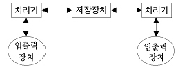
- 약결합(Loosely-Coupled) 다중 처리 시스템
- 강결합(Tightly-Coupled) 다중 처리 시스템
- 단일버스(Single Bus 다중 처리 시스템
- 공유버스(Shared Bus) 다중 처리 시스템
(정답률: 45%)
56. UNIX에 관한 설명으로 옳지 않은 것은?
- 쉘(Shell)은 사용자와 시스템 간의 대화를 가능케 해주는 UNIX 시스템의 메커니즘이다.
- UNIX 시스템은 루트 노드를 시발로 하는 계층적 파일 시스템 구조를 사용한다.
- 커널(Kernel)은 프로세스 관리, 기억장치 관리, 입·출력 관리 등의 기능을 수행한다.
- UNIX 파일 시스템에서 각 파일에 대한 파일 소유자, 파일 크기, 파일 생성 시간에 대한 정보는 데이터 블록에 저장한다.
(정답률: 51%)
57. 빈 기억공간의 크기가 20K, 16K, 8K, 40K 일 때 기억장치 배치 전략으로 “Best Fit”을 사용하여 17K의 프로그램을 적재할 경우 내부단편화의 크기는 얼마인가?
- 3K
- 23K
- 64K
- 67K
(정답률: 69%)
58. 분산 처리 시스템의 위상에 따른 분류에서 한 사이트의 고장이 다른 사이트에 영향을 주지 않지만, 중앙 사이트 고장 시 전체 시스템이 정지되는 형태는 무엇인가?
- Tree 구조
- Star 구조
- Ring 구조
- Mesh 구조
(정답률: 75%)
59. 운영체제를 기능상 분류할 경우 “Control Program”과 “Process Program”으로 구분할 수 있다. 다음 중 “Control Program”에 해당하는 것으로만 짝지어진 것은?
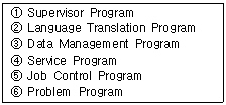
- ②, ④, ⑥
- ①, ③, ⑤
- ①, ⑤, ⑥
- ②, ③, ④
(정답률: 63%)
60. 다중 처리기의 운영체제 형태 중 주/종(Master/Slave) 처리기에 대한 설명으로 옳지 않은 것은?
- 주프로세서만이 운영체제를 수행한다.
- 종프로세서는 입/출력 발생시 주프로세서에게 서비스를 요청한다.
- 주프로세서가 고장 나면 전체 시스템이 다운된다.
- 대칭적 구조를 갖는다.
(정답률: 73%)
4과목: 소프트웨어 공학
61. 소프트웨어 재공학의 필요성이 대두된 가장 주된 이유는?
- 요구사항 분석의 문제
- 설계의 문제
- 구현의 문제
- 유지보수의 문제
(정답률: 73%)
62. 소프트웨어 형상관리(Configuration Management)에 관한 설명으로 거리가 먼 것은?
- 소프트웨어에서 일어나는 수정이나 변경을 알아내고 제어하는 것을 의미한다.
- 소프트웨어 개발의 전체 비용을 줄이고, 개발 과정의 여러 방해 요인이 최소화되도록 보증하는 것을 목적으로 한다.
- 형상관리를 위하여 구성된 팀을 책임 프로그래머 팀(Chief Programmer Team)이라고 한다.
- 형상관리에서 중요한 기줄 중의 하나는 버전 제어 기술이다.
(정답률: 63%)
63. 소프트웨어 프로젝트 관리에 중요한 영향을 주는 3대 요소로 가장 타당한 것은?
- 사람, 문제, 프로세스
- 문제, 프로젝트, 작업
- 사람, 문제, 도구
- 작업, 문제, 도구
(정답률: 78%)
64. 객체지향 개념에서 연관된 데이터와 함수를 함께 묶어 외부와 경계를 만들고 필요한 인터페이스만을 밖으로 드러내는 과정을 무엇이라고 하는가?
- 메시지
- 캡슐화
- 상속
- 다형성
(정답률: 84%)
65. 소프트웨어 수명주기 모형 중 프로토타이핑 모형(Prototyping Model)의 가장 큰 장점은?
- 위험요소가 쉽게 발견된다.
- 유지보수가 쉬워진다.
- 사용자 요구사항을 정확하게 파악할 수 있다.
- 소프트웨어 개발 일정을 정확하게 수립할 수 있다.
(정답률: 72%)
66. 람바우(Rumbaugh)의 OMT 기법에서 자료 흐름도와 가장 밀접한 관계가 있는 것은?
- 객체 모델링
- 기능 모델링
- 동적 모델링
- 상속 모델링
(정답률: 49%)
67. 객체지향 기법에서 객체가 메시지를 받아 실행해야 할 객체의 구체적인 연산을 정의한 것은?
- Entity
- Method
- Instance
- Class
(정답률: 72%)
68. 소프트웨어 품질 목표 중 다음 정의에 해당하는 것은?
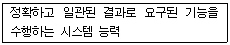
- Efficiency
- Correctness
- Integrity
- Reliability
(정답률: 46%)
69. 자료흐름도(DFD)의 각 요소별 표기 형태의 연결이 잘못된 것은?
- Process : 원
- Data Flow : 화살표
- Data Store : 삼각형
- Terminator : 사각형
(정답률: 69%)
70. CASE에 대한 설명으로 거리가 먼 것은?
- 정형화된 메커니즘을 소프트웨어 개발에 적용하여 소프트웨어 생산성 향상을 구현한다.
- 시스템 개발과정의 일부 또는 전체를 자동화시킨다.
- 개발 도구와 개발 방법론이 결합된 것이다.
- 도형목차, 총괄도표, 상세도표로 구성되어 전개된다.
(정답률: 58%)
71. 소프트웨어 프로젝트를 계획하려면 먼저 소프트웨어 범위를 결정해야 한다. 다음 사항과 관계가 되는 범위 결정 요소는 무엇인가?
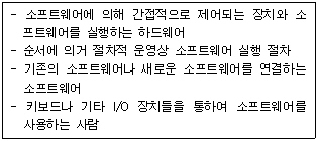
- 기능
- 성능
- 제약조건
- 인터페이스
(정답률: 70%)
72. 12개월이 기한인 S/W 프로젝트의 개발 일정이 지연되자, 2개월 남기고 사장은 프로젝트 관리자에게 3명의 인력을 추가 투입 하라고 지시했다. 이에 프로젝트 관리자는 반대했다. Brooks 법칙에 근거한 반대 이유로 가장 타당한 것은?
- 인력관리가 어렵다.
- 비용 발생이 증가한다.
- 일정이 더 지연된다.
- 소프트웨어 질이 떨어진다.
(정답률: 71%)
73. LOC 기법에 의하여 예측된 총 라인 수가 50000일 경우 개발에 투입될 프로그래머의 수가 5명이고, 각 프로그래머의 평균 생산성이 월 당 500 라인일 때, 개발에 소요되는 기간은?
- 10개월
- 20개월
- 25개월
- 50개월
(정답률: 72%)
74. 소프트웨어 재사용에 대한 설명으로 거리가 먼 것은?
- 소프트웨어 품질을 향상시킨다.
- 생산성이 증대된다.
- 새로운 개발 방법 도입이 용이하다.
- 개발 시간이 단축되고 비용이 감소한다.
(정답률: 76%)
75. 소프트웨어 재공학 활동 중 역공학에 해당하는 것은?
- 소프트웨어 동작 이해 및 재공학 대상 선정
- 소프트웨어 기능 변경 없이 소프트웨어 형태를 목적에 맞게 수정
- 원시 코드로부터 설계정보 추출 및 절차 설계 표현, 프로그램과 데이터 구조 정보 추출
- 기존 소프트웨어시스템을 새로운 기술 또는 하드웨어 환경에 이식
(정답률: 61%)
76. 바람직한 소프트웨어 설계 지침으로 볼 수 없는 것은?
- 특정 기능을 수행하는 논리적 요소들로 분리되는 구조를 가지도록 한다.
- 적당한 모듈의 크기를 유지한다.
- 강한 결합도, 약한 응집도를 유지한다.
- 모듈 간의 접속 관계를 분석하여 복잡도와 중복을 줄인다.
(정답률: 76%)
77. 소프트웨어 위기의 현상으로 보기 어려운 것은?
- 소프트웨어 유지보수 비용의 증가
- 소프트웨어 신뢰성, 정확성의 결여
- 소프트웨어 개발 인력의 증가
- 소프트웨어 개발 일정 준수의 어려움
(정답률: 79%)
78. 자료사전(Data Dictionary)에서 자료의 반복을 나타내는 기호는?
- ( )
- { }
- [ ]
- **
(정답률: 72%)
79. 화이트 박스 테스트 기법으로만 짝지어진 것은?
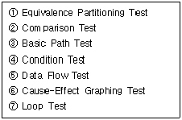
- ①, ②, ⑦
- ②, ③, ④, ⑥, ⑦
- ①, ②, ⑥
- ③, ④, ⑤, ⑦
(정답률: 67%)
80. 소프트웨어 공학에 대한 설명으로 가장 적합한 것은?
- 소프트웨어의 제작부터 운영까지 생산성을 높이기 위해 기술적, 인간적인 요소에 대한 방법론을 제공한다.
- 소프트웨어의 설계, 제작, 운영에 있어서 인간적인 요소를 배제한 프로그래밍 자체에 대한 공학적 연구를 의미한다.
- 소프트웨어의 공학적이고 기술적인 영향을 사회 경제적인 시각에서만 설명한다.
- 소프트웨어의 위기를 해결하기 위해서 현재 이미 해결된 문제들에 대해서 역사적 관점을 설명한다.
(정답률: 70%)
5과목: 데이터 통신
81. 데이터 전송제어 절차를 순서대로 바르게 나타낸 것은?
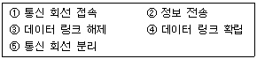
- ①→④→②→③→⑤
- ⑤→④→③→①→②
- ②→①→③→④→⑤
- ④→②→①→③→⑤
(정답률: 82%)
82. IP(Internet Protocol)의 설명 중 옳지 않은 것은?
- 비연결형 전송 서비스를 제공한다.
- 비신뢰성 전송 서비스를 제공한다.
- 데이터그램이라는 데이터 전송 형식을 갖는다.
- 스트림(Stream) 전송 기능을 제공한다.
(정답률: 43%)
83. 다음이 설명하고 있는 전송기술은?
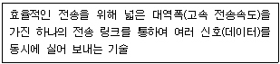
- 다중화
- 부호화
- 양자화
- 압축화
(정답률: 78%)
84. 데이터 통신에서 오류 검출을 위해 사용되는 기법이 아닌 것은?
- Parity Check
- Block Sum Check
- Cyclic Redundancy Check
- Run Length Check
(정답률: 70%)
85. 데이터 전송 속도의 척도를 나타내는 것이 아닌 것은?
- 변조 속도
- 데이터 신호 속도
- 반송파 주파수 속도
- 베어러(Bearer) 속도
(정답률: 41%)
86. 다음이 설명하고 있는 오류제어 방식은?
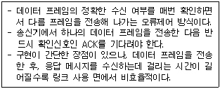
- Stop-and-Wait ARQ
- Go-back-N ARQ
- Selective-Repeat ARQ
- Forward-Stop ARQ
(정답률: 71%)
87. 데이터 통신 방식에 대한 설명으로 가장 옳은 것은?
- 전이중 통신 방식은 통신 회선의 효율이 가장 높으며 전화 등에 사용된다.
- 반이중 통신 방식의 예로는 TV, Radio, 무전기 등이 있다.
- 단방향 통신 방식이나 반이중 통신 방식의 경우 반드시 4선식 회선이 필요하다.
- 전이중 통신 방식은 양쪽 방향으로 신호의 전송이 가능하기는 하나 어떤 순간에는 반드시 한쪽 방향으로만 전송이 이루어지는 경우이다.
(정답률: 65%)
88. 음성 전화망과 같이 메시지가 전송되기 전에 발생지에서 목적지까지의 물리적 통신 회선 연결이 선행되어야 하는 교환 방식은?
- 메시지 교환 방식
- 데이터그램 방식
- 회선 교환 방식
- ARQ 방식
(정답률: 72%)
89. 다음 LAN의 구성 형태(Topology)와 매체접근제어(MAC; Media Access Control) 방식의 연결이 잘못 짝지어진 것은?
- Star형 - 회선 교환 방식
- Ring형 - 토큰 링(Token Ring)
- Bus형 - CSMA/CD 방식
- Mesh형 - 레지스터 삽입 방식
(정답률: 59%)
90. HDLC는 링크 구성 방식에 따라 세 가지 동작 모드를 가진다. 이에 해당하지 않는 것은?
- NBM
- ABM
- ARM
- NRM
(정답률: 56%)
91. LAN의 매체 접근 제어 중 토큰 패싱 방식에 대한 설명으로 가장 옳은 것은?
- 노드 사이의 접근충돌을 막기 위해서 네트워크 접근을 교대로 허용한다.
- 데이터 전송 시 반드시 토근을 취득하여야 하고, 전송을 마친 후에는 토큰을 반납한다.
- 노드 수가 많거나 데이터 양이 많은 경우에는 충돌이 일어나기 때문에 데이터의 손실이 매우 크다.
- 우선순위가 없기 때문에 모든 노드들이 균등한 전송기회를 갖는다.
(정답률: 64%)
92. HDLC 프로토콜에 관한 설명이 아닌 것은?
- 점대점 링크 및 멀티포인트 링크를 위하여 개발되었다.
- 반이중 통신과 전이중 통신을 모두 지원한다.
- 에러 제어를 위해서는 Stop-and-Wait 방식을 지원한다.
- 슬라이딩 윈도우 방식에 의해 흐름 제어를 제공한다.
(정답률: 48%)
93. 동기식시분할 다중화(Synchronous TDM)에 대한 설명으로 옳지 않은 것은?
- 전송시간을 일정한 간격의 시간 슬롯(Time Slot)으로 나누고, 이를 주기적으로 각 채널에 할당한다.
- 하나의 프레임은 일정한 수의 시간 슬롯(Time Slot)으로 구성된다.
- 송신단에서는 각 채널의 입력 데이터를 각각의 채널 버퍼에 저장하고, 이를 순차적으로 읽어낸다.
- 통계적 시분할 다중화(Statistical TDM) 방식 보다 전송 용량의 낭비가 적다.
(정답률: 61%)
94. 데이터 통신에서 사용되는 비동기 전송 방식에 대한 설명으로 옳지 않은 것은?
- 수신기는 문자 단위의 재동기를 위해서 시작 비트(Start Bit)와 정지 비트(Stop Bit)를 사용한다.
- 비동기식 전송은 단순하여 저렴하게 구현될 수 있으나 문자당 2~3 비트의 오버헤드(Overhead)가 요구된다.
- 정지 비트는 휴지 상태와 같으므로 송신기는 다음 문자를 보낼 준비가 될 때 까지 정지 비트를 계속 전송한다.
- 신호 내에 클록 정보 포함하여 전송시키기 위해 맨체스터(Manchester)부호화 방법을 사용한다.
(정답률: 43%)
95. 디지털 데이터를 아날로그 신호로 변환하는 방식이 아닌 것은?
- ASK
- FSK
- PSK
- PCM
(정답률: 75%)
96. 패킷(Packet) 교환과 관계가 없는 것은?
- 패킷 단위로 데이터 전송
- 고정적인 전송 대역폭
- 가상회선 방식
- 데이터그램 방식
(정답률: 51%)
97. HDLC(High-Level-Data Link Control)의 명령과 응답에 대한 프레임 종류가 아닌 것은?
- Supervisory Frame
- Handle Frame
- Information Frame
- Unnumbered Frame
(정답률: 52%)
98. OSI 참조 모델에서 통신회선을 통하여 비트전송을 수행하기 위하여 전기적, 기계적인 제어 기능을 수행하는 계층은?
- Physical Layer
- Session Layer
- Network Layer
- Application Layer
(정답률: 73%)
99. TCP/IP 프로토콜 중 인터넷 계층에 대응하는 OSI 참조 모델의 계층은?
- Physical Layer
- Presentation Layer
- Network Layer
- Session Layer
(정답률: 71%)
100. 주파수 분할 다중화기(FDM)에서 부채널 간의 상호 간섭을 방지하기 위한 것은?
- 가드 밴드(Guard Band)
- 채널(Channel)
- 버퍼(Buffer)
- 슬롯(Slot)
(정답률: 78%)